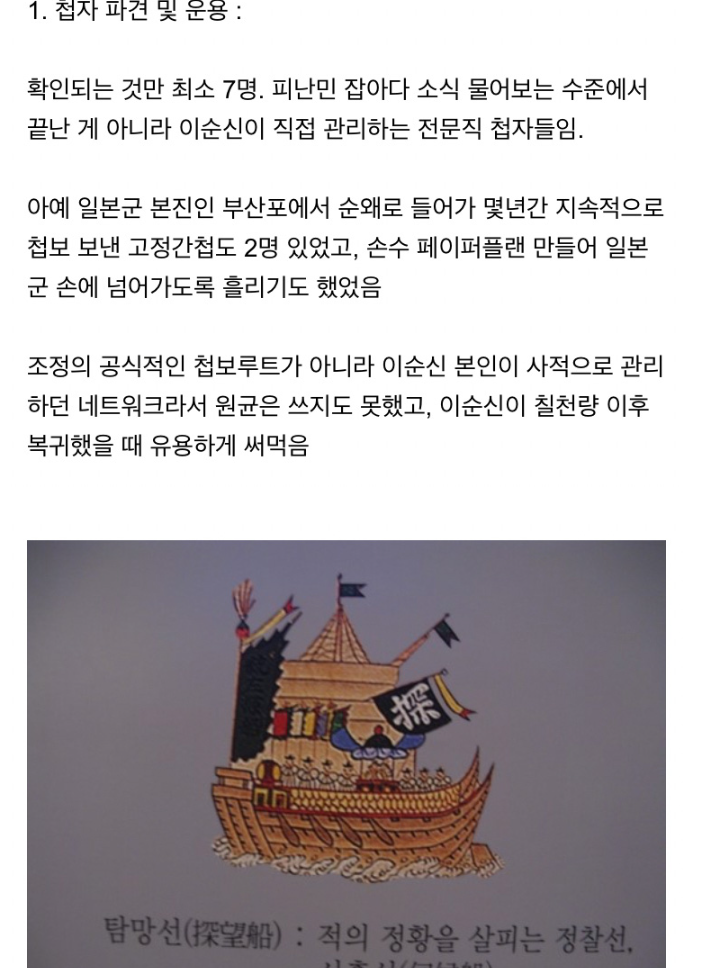
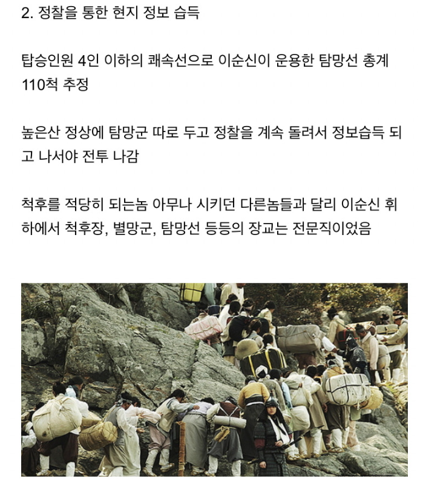
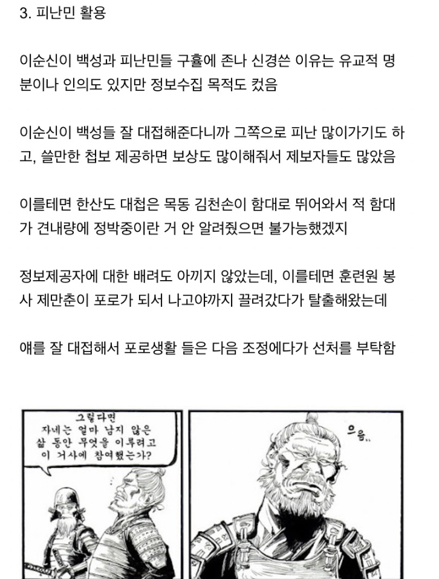
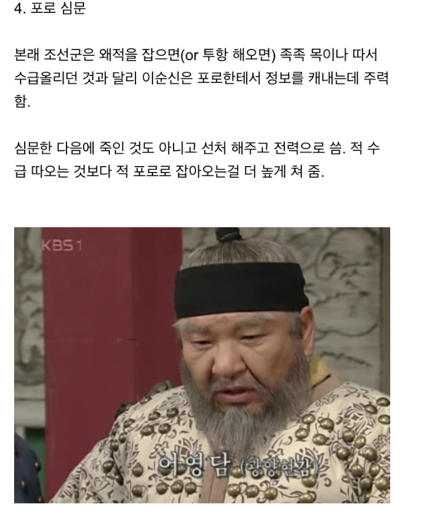
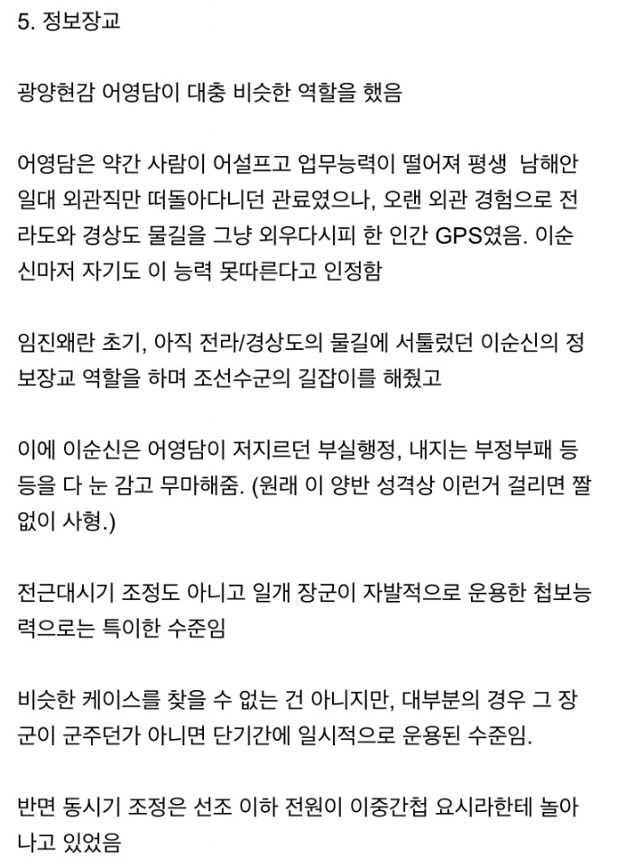
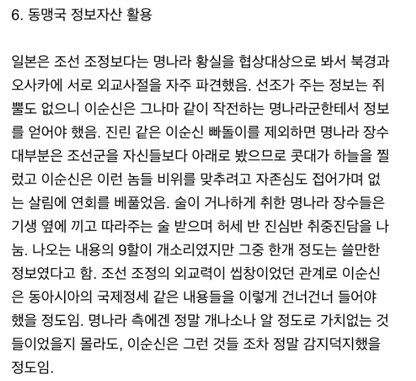

괜히 선조가 쫄은게 아님
ㄹㅇ 맘잘못잡으면 역성이네 바로
심지어 중앙정부를 지원해줬다는거임 ㅋㅋㅋㅋ
혼자서 정찰, 보급 다 했음
전투성과가 엄청나서 묻히고 있는 수준이지 정보 군수 공병 인사 재정 전부 만렙이었음
회귀능력자 수준이네
진짜 세종대왕,이순신은 한반도의 구세주임
음...........
벌쳐굴리고 스캔뿌리는 테란같네
이순신을 격파한 원균은 대체 얼마나...
보급도 스스로 해결했다며
조선도 명장의 반역으로 생긴 나라라 선조가 쫄을만도 했겠네
이좁은나라에서한두명이꼭나타나서하드캐리를해준다니까
2차대전 배경인 하츠오브아이언 게임에서 구축함으로 정찰돌리고 주력함대는 대기하다가 적함 찾으면 나가는 전술이네
그걸 조선시대때 하시다니 신
저러니까 선조가 개쫄았던거구나
마침 이씨겠다 일반 백성들은 왕조 바뀌어도 신경 1도 안쓸 수준이네ㄷㄷ
이런 이순신을 박살낸 하지메 사토루는 대체 어떤 인물일까
이걸 다 중앙정부 지원없이 한거지? 대단하다 진짜